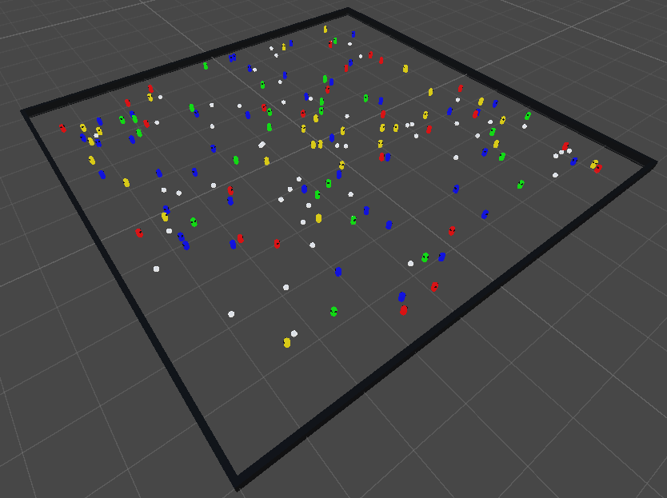

Microbes
This exercise puts you in charge of designing microbes which can mate with and eat each other.

Microbe Controller
The MicrobeController component is provided to be a starting point for you to implement your behaviour design in for the microbes.
Microbe
The Microbe component contains all aspects of the microbes for this exercise. Microbes require energy to survive, and it will decay at a given rate over time. Once a microbe hits 0 energy, it will be despawned. Each microbe has a unique identifier corresponding to their color. Microbes can mate with other microbes that have the same identifier as them, and can eat microbes with different identifiers. Mating has a cooldown timer, and eating another microbe requires having more energy than the other microbes. Eating another microbe will add that microbe's energy to the energy of the microbe which ate it. A newly spawned microbe as a result of mating will have an energy level equal to the average of its two parents. Mating and eating are both automatically handled when microbes collide with each other.
Energy Pickup
EnergyPickup instances randomly spawn around the level, and when a microbe makes contact with one it will add a given energy level to the microbe. After being used by a microbe, the energy pickup will despawn.
Sensors
Two sensors have been provided to help you with your development. Each of these sensors have already been attached to the microbe prefab.
Microbe Vision Sensor
The MicrobeVisionSensor allows for detecting other microbes.
Energy Vision Sensor
The EnergyVisionSensor allows for detecting energy pickups.
Microbe Manager
The MicrobeManager handles the configuration for the exercise.